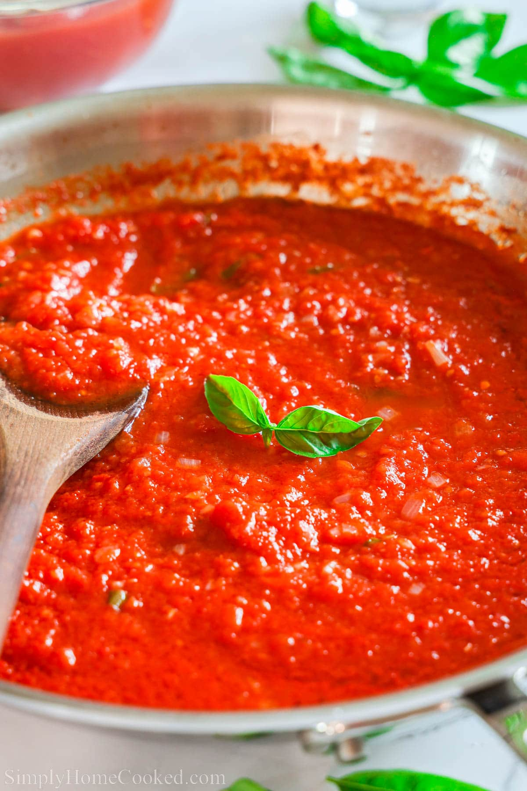

Home
Tomato Sauce

Description
Great tomato sauce uses only a few simple ingredients and is infinitley better that what you get in a jar.
Tomatoes, garlic, olive oil, and basil are all you need to make a comforting delicious sauce for your next pasta dish!
Ingredients
- 1 can san marzano tomatoes
- 1 head of garlic
- 1 cup chopped basil
- 2 Tbsp olive oil
- 1 tbsp MSG
- 2 pinches salt and pepper
- Optional: 1/2 cup red wine
Directions
- Dump your tomatoes into a bowl and crush them with your hands. Remove any leaves or stems.
- Peel your garlic and finely mince, grate, or press it.
- In a sauce pan heat your olive oil over medium heat until shimmering.
- Gently fry the garlic until fragrant
- Add red wine to the pan and simmer for 2 minutes
- Add tomatoes to the pan and bring to a gentle simmer
- Lower heat to medium low and add seasonings and half the basil. Let cook on low for 30 minutes
- Add the rest of the basil when serving